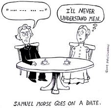

Morse Code
Morse Code, either of two systems for representing letters of the alphabet, numerals, and punctuation marks by an arrangement of dots, dashes, and spaces.
If all fails…
Morse Code is one of the easiest ‘Tools’ to use if you are in distress.
How does it work?
Morse Code was used to send messages over long distances. Morse code messages can be sent using light or by pulses.
The codes are transmitted as electrical pulses of varied lengths or analogous mechanical or visual signals, such as flashing lights.
What was the Importance of Morse Code?
Before the invention of Morse Code and the telegraph, messages were still handwritten and carried by horseback. Morse Code changed the way we communicated. In the time of its invention, it was the fastest long distance form of communication.
Morse Code allowed for ships at sea to communicate over long distances using large lights. Morse Code was especially pivotal during the second World War because it greatly improved the speed of communication. War planes also used Morse Code to detail locations for enemy ships, bases, and troops and relay them back to headquarters.
Is Morse Code still used today?
Morse Code is still widely recognized, even if it is not as widely used as it once was. Morse code is still popular among amateur radio enthusiasts, although proficiency in Morse Code is no longer a requirement to obtain your amateur radio license.
Morse Code is most prevalent in Aviation and Aeronautical fields since radio navigational aids such as VOR's and NDB's still identify in Morse Code. The US Navy and Coast Guard still use signal lamps to communicate via Morse Code
About Morse Code Project
- Published: Friday 5th August 2021
- Author: Harry Nguyen
- Gmail Support: hungdn210@gmail.com
- Contact: Phi Hùng Nguyễn